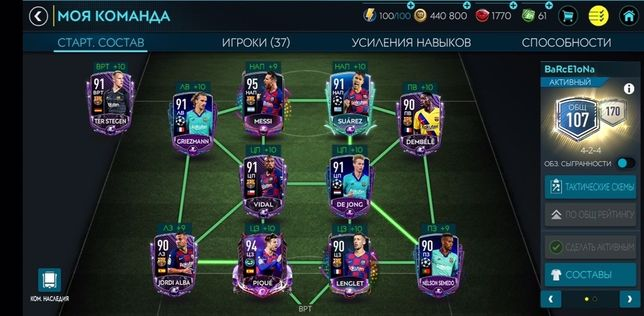
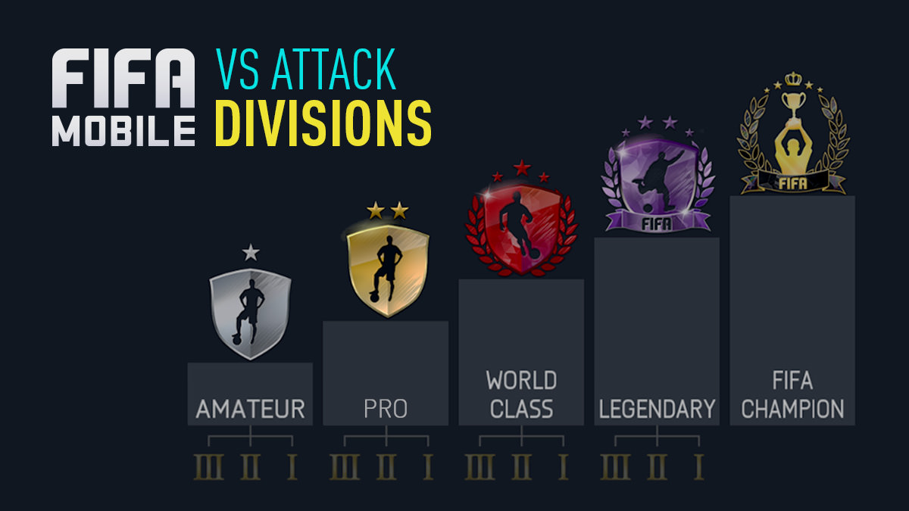

FIFA 20 - це футбольна імітація відеоігри, опублікована компанією Electronic Arts як частина серії FIFA. Був випущений 27 вересня 2019 року для Microsoft Windows, PlayStation 4, Xbox One та Nintendo Switch.
FIFA 20 має три зірки обкладинки у всіх регіональних виданнях. Вінгер «Реала» Еден Азар був названий новою зіркою кавер-версії Standart Edition, а захисник «Ліверпуля» Вірджіл ван Дейк на обкладинці Champions Edition. Колишній півзахисник «Ювентус а» і Мадридського «Реала», а нині і його тренер, Зінедін Зідан був пізніше названий зіркою кавер-версії Ultimate Edition.

У ФІФА Мобайл 20 стартовий склад все так само складається з 11 гравців, проте в команді має бути присутнім всього 27 футболістів. У попередніх версіях симулятора було необхідно зібрати 11 гравців стартового складу і 6 футболістів на лавці запасних.
У атакуючої лінії команди повинні бути 2 вінгера, 3 нападників і 3 форварда, в лінії півзахисту - по 3 центральних, атакуючих і опорних півзахисника, а також по одному півзахисникові з кожного флангу - лівого і правого. Крім того, в складі мають бути присутні гравці захисту: 3 центральні захисники і по одному воротарю, лівому і правому захисника, а також один лівий фланговий і один правий фланговий захисник.

Ще однією відмінною особливістю ФІФА Мобайл є режим «VS Атака». Цей розрахований на багато користувачів режим з'явився в грі в 2017-м. VS Атака - це розвиток попереднього режиму Атаки, в якому гравець має можливість швидко і без зайвих приготувань провести матч проти іншого гравця. В даному многопользовательском режимі матчі тривають всього дві хвилини. Після з'єднання у кожного з гравців до початку матчу є приблизно 15 секунд на вибір тактики і схеми. Обрана схема визначає гру в обороні. Мета режиму, як і в справжньому футболі - забити більше голів, ніж опонент.